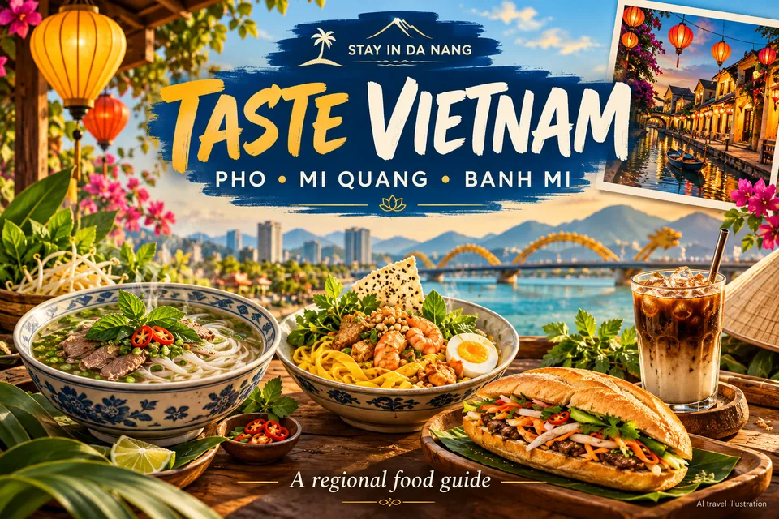

What to eat in Vietnam: a regional food guide
Food can add context to a journey. Explore a few regional dishes instead of relying on an unverified “best restaurant” list.

Northern flavours
In Hanoi, learn about pho with broth, rice noodles and meat, or bun cha with grilled pork, noodles and dipping sauce. Recipes vary by vendor. Egg coffee can contain egg and milk: check ingredients if you have allergies. Read the menu and prices before ordering around the Old Quarter.
Central Vietnam
Mi Quang is associated with Quang Nam and combines noodles, herbs, protein and a relatively small amount of broth; toppings vary. Cao lau is a dish to explore in Hoi An. Banh mi fillings and sauces differ between vendors, so ask about portions and ingredients rather than choosing only from promotional photos.
Southern dishes and dietary needs
In Ho Chi Minh City, explore hu tieu or banh xeo, with regional variations. Order gradually when sharing. Vegetarian travellers should ask about broth and fish sauce; confirm peanuts, seafood, egg, milk and shared preparation equipment for allergies. Choose clean preparation, clear prices and suitable drinking water.